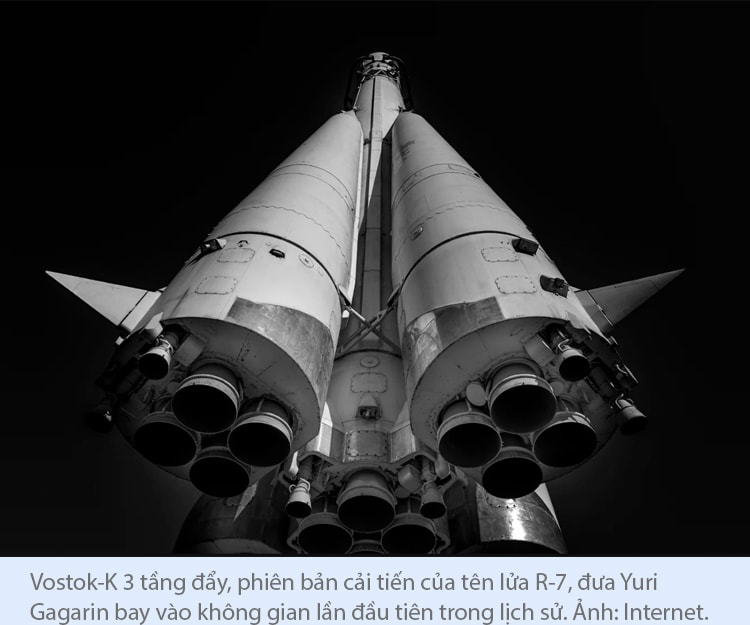
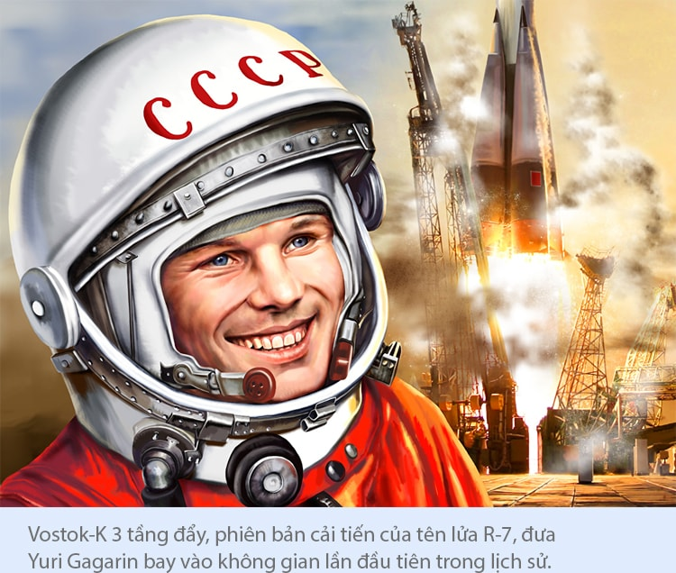

- 21 điểm
đổ bộ - người đặt
nền móng - long-hùm
so găng - thế kỷ
21 - kho báu
mặt trăng - huyền thoại
apollo

Đó là tâm niệm uyên bác của 'cha đẻ ngành du hành vũ trụ hiện đại' người Nga Коnstаntin E. Tsiolkovsky có được sau những năm tháng dành cả cuộc đời trầm lặng tự học trong căn nhà gỗ nhỏ cách Moskva hàng trăm cây số.
Chẳng ai có thể ngờ, cậu bé Коnstаntin E. Tsiolkovsky bị khiếm thính năm 10 tuổi, không được nhận vào học ở bất cứ ngôi trường nào, lại có thể trở thành 'cha đẻ' ngành tên lửa của Nga nói riêng, và là người tiên phong trong lý thuyết du hành vũ trụ thế giới nói chung.
Năm 1903, ở độ tuổi 46, Коnstаntin E. Tsiolkovsky công bố công trình khoa học quan trọng nhất của mình có tên "Exploration of Outer Space by Means of Rocket Devices".
Công trình được xem là luận án đầu tiên trên thế giới về tên lửa này thể hiện những tính toán bậc thầy của ông xoay quanh việc thiết kế một phương tiện có thể nâng cánh tàu vũ trụ thoát khỏi lực hút Trái Đất, tiến thẳng lên quỹ đạo Trái Đất và không gian. Phương tiện đó chính là tên lửa nhiều tầng, sử dụng nhiên liệu Hydro lỏng và Oxy lỏng.
Không hẹn mà ý tưởng lớn gặp nhau, trùng với tư duy bậc thầy về tên lửa của Коnstаntin E. Tsiolkovsky ở nước Nga xa xôi là Robert H. Goddard và Hermann J. Oberth.
Ngày 16/3/1926, kỹ sư vật lý người Mỹ, tiến sĩ Robert H. Goddard (1882-1945) đã chế tạo và phóng thử thành công tên lửa nhiên liệu lỏng đầu tiên trên thế giới, mở ra kỷ nguyên du hành vũ trụ bằng tên lửa cho nhân loại.
Trước khi được công nhận là 'cha đẻ của động cơ tên lửa hiện đại', hãy xem hành trình sáng tạo đột phá và miệt mài cho khoa học của tiến sĩ Robert H. Goddard được lịch sử ghi nhận như thế nào.
Năm 1914, Robert H. Goddard nhận được 2 bằng sáng chế Mỹ, một bằng cho tên lửa sử dụng nhiên liệu lỏng và một bằng cho tên lửa 3 tầng sử dụng nhiên liệu rắn.
Năm 1916, dưới sự tài trợ của Viện Smithsonian (Mỹ), Robert H. Goddard công bố tài liệu khoa học kinh điển mang tên “A Method of Reaching Extreme Altitudes” trình bày các lý thuyết toán học về lực đẩy của tên lửa.

Năm 1920, sau nhiều năm sáng tạo không ngừng từ bộ óc thiên tài, Robert H. Goddard đã hoàn thành phác thảo về một tên lửa có thể chạm tới Mặt Trăng. Năm 1926 đánh dấu thời điểm ông chế tạo và thử nghiệm thành công tên lửa đầu tiên sử dụng nhiên liệu lỏng.
NASA nhận định ngày 16/3/1926 khi đó tại địa điểm thử tên lửa thuộc trang trại gia đình ông là Aunt Effie ở thị trấn Auburn, bang Massachusetts, Mỹ đã trở thành ngày có ý nghĩa lịch sử trọng đại tương tự ngày 17/12/1903 khi anh em nhà Wright thử thành công chuyến bay đầu tiên trên thế giới tại đồi Kill Devil, thị trấn Kitty Hawk, bang Bắc Carolina, Mỹ.
35 năm sau ngày tên lửa nhiên liệu lỏng đầu tiên trên thế giới do Robert H. Goddard phóng thử thành công, ngày 16/3/1961, NASA thành lập trung tâm bay mang tên ông - Trung tâm Bay không gian Goddard (GSFC) để tri ân những đóng góp bậc thầy của 'cha đẻ động cơ tên lửa hiện đại'.
Cũng trong khoảng thời gian đầu thập niên 1920 đó, nhà lý thuyết tên lửa Đức Hermann J. Oberth (1894-1989) đã xác định tên lửa đa tầng đóng vai trò tối quan trọng cho các chuyến bay vươn tầm không gian.
Ngay từ khi mới là cậu bé 11 tuổi, Hermann J. Oberth đã dành sự say mê đặc biệt cho tên lửa sau khi được mẹ đưa cho cuốn sách "From The Earth To The Moon" của nhà văn khoa học viễn tưởng Pháp lừng danh Jules Verne (1828-1905) - tác giả hai cuốn "Hai vạn dặm dưới biển" (1870), và "Vòng quanh thế giới trong 80 ngày" (1873) nổi tiếng.

Không chỉ đọc (cậu bé đã đọc đến thuộc lòng cuốn "From The Earth To The Moon"), Hermann J. Oberth còn ham thích việc tự học, mày mò, nghiên cứu, và tìm mọi cách để thách thức sự thống trị bấy lâu của trọng lực. Nhờ thế, ở độ tuổi 14 và 18, Hermann J. Oberth đã phát triển tư duy từ việc hình dung một "tên lửa đẩy" có khả năng tự đưa mình vào không gian bằng nhiên liệu lỏng, đến vai trò của tên lửa đa tầng trong việc sinh ra tốc độ liên tục, tạo sức mạnh đưa tên lửa vươn tầm vũ trụ.
Về sau, trong cuốn “The Rocket into Planetary Space” (1923) của mình, Hermann J. Oberth đã giải thích rõ ràng và bài bản cách thức hoạt động của tên lửa đa tầng sử dụng nhiên liệu lỏng, có thể thoát khỏi lực hấp dẫn của Trái Đất rồi bay vào không gian.
Từ lý thuyết đến thực tiễn chỉ cách nhau 8 năm, bởi, vào ngày 7/5/1931, tại địa điểm gần thủ đô Berlin, Đức, tên lửa đầu tiên do Hermann J. Oberth chế tạo được phóng thử thành công.
Với tầm nhìn tiên phong của người thuộc bộ ba 'cha đẻ ngành tên lửa vũ trụ' đầu tiên trong lịch sử, Hermann J. Oberth không giới hạn mình trong thiết kế về tên lửa đẩy, ông còn đề xuất các thiết bị tàu vũ trụ; đưa ra các ý tưởng mới lạ về cơ sở phóng tàu vũ trụ; bàn các vấn đề cũng như thách thức liên quan đến kỹ thuật, sinh lý và tâm lý sẽ gặp phải khi đưa con người du hành không gian.
Nhờ có trí tuệ vượt thời đại của bộ ba tài năng tên lửa hiếm có trong cả khoa học sáng tạo và kỹ thuật thực tế ngườiNga-Mỹ-Đức mà nhân loại về sau mới có cơ hội thoát khỏi lực hút ngàn đời của Trái Đất để vươn mình vĩ đại, chạm đến những vì sao trong vũ trụ bao la, chứa đầy bí ẩn hấp dẫn.
NASA phải công nhận Коnstаntin E. Tsiolkovsky - Robert H. Goddard - và Hermann J. Oberth là những nhà khoa học đầu tiên trên thế giới không chỉ nhận ra tiềm năng của tên lửa và chuyến bay vào vũ trụ mà còn đóng góp trực tiếp vào việc đưa chúng đi vào thực tiễn vĩ đại.
"Điểm riêng biệt duy nhất ở bộ ba 'cha đẻ ngành tên lửa vũ trụ' là, chỉ nhà lý thuyết tên lửa Đức Hermann J. Oberth còn sống hợp thời để chứng kiến sự bùng nổ vĩ đại của kỹ nghệ vũ trụ trong thế kỷ 20, chứng kiến những lần nhân loại sáng tạo đột phá không ngừng từ những viên gạch móng mà bộ ba đã tạo dựng để rồi sau đó phóng đi những con tàu vũ trụ không người lái và có người lái lên đường thực hiện các sứ mệnh khám phá không gian khác nhau.
Dầu vậy, lịch sử thế giới vẫn mãi nhớ và gọi tên bộ ba Коnstаntin E. Tsiolkovsky người Nga - Robert H. Goddard người Mỹ - và Hermann J. Oberth người Đức là "Cha đẻ ngành tên lửa và du hành vũ trụ hiện đại" của nhân loại." - NASA.


Lời hiệu triệu của Tổng thống John F. Kennedy trong Hội nghị liên tịch Quốc hội Mỹ ngày 25/5/1961 khiến toàn bộ khán phòng ngạc nhiên tột độ.
Trước khi yêu cầu Quốc hội tăng ngân sách cho ngành vũ trụ từ 7 lên 9 tỷ USD, niềm tin của vị tổng thống thứ 35 của Mỹ đã đặt cơ quan vũ trụ NASA non trẻ (thành lập năm 1958) vào sứ mệnh khó khăn nhất, đầy thách thức nhất trong lịch sử của mình.
Đứng trước sức ép khổng lồ từ thành công không thể phủ nhận của Liên Xô, cộng với áp lực phải hoàn thành sứ mệnh chỉ trong vòng 10 năm ngắn ngủi, NASA đã phải lao động ngày đêm, sáng tạo ngày đêm, không ngừng tìm kiếm tài năng trong và ngoài nước ngày đêm để hoàn thành cho kỳ được ước nguyện của Tổng thống J.F. Kennedy.
Trở lại thập niên 1930...
Nỗi niềm khoa học đau đáu của nhà lý thuyết tên lửa người Đức Hermann J. Oberth được người trợ lý trẻ tên là Wernher von Braun lĩnh hội trọn vẹn. Bởi, 4 thập kỷ sau khi những viên gạch nền móng đầu tiên về tên lửa của bộ ba Konstantin E. Tsiolkovsky - Hermann J. Oberth - Robert H. Goddard được dựng lên, ngành công nghệ tên lửa vũ trụ thế giới chuyển mình vĩ đại hơn bao giờ hết.
Dưới bàn tay và khối óc kỳ tài của kiến trúc sư trưởng người Đức - người về sau được mệnh danh là 'Cha đẻ chương trình vũ trụ Mỹ' - Wernher von Braun (1912-1977) đã đưa sứ mệnh khai phá vũ trụ của loài người bùng nổ thực sự sau sự kiện chế tạo thế hệ tên lửa đẩy tối tân nhất thế kỷ 20 - Saturn V - nâng cánh đưa phi hành đoàn Apollo 11 đổ bộ Mặt Trăng năm 1969 thành công ngoài sức tưởng tượng của con người.
Khoan nói về ngày 20/7/1969 đi vào lịch sử không thể quên ấy...
Bởi, xét dưới góc độ khoa học, để có được chiến tích vũ trụ hiển hách nhất mọi thời đại ấy, nhân loại cần phải cảm ơn cuộc Chiến tranh Lạnh kéo dài 4 thập kỷ giữa hai siêu cường Mỹ - Liên Xô, một cuộc chiến nhen nhóm ngay từ những ngày Thế chiến II (1939-1945) còn chưa chấm dứt.
Vì sao? Chiến tranh Lạnh chính là cuộc so găng leo thang và không khoan nhượng của Mỹ-Xô nhằm thể hiện vị thế và tự tôn dân tộc của cặp Long-Hùm với nhau. Và cuộc chạy đua ra ngoài không gian thời kỳ này - xét dưới góc độ tiến bộ khoa học - đã mang tới cho nhân loại những thành tựu vũ trụ (lần lượt) đáng kinh ngạc.

Nếu như người Liên Xô có công mở ra kỷ nguyên chinh phục vũ trụ bằng hai sự kiện: Phóng vệ tinh nhân tạo đầu tiên trên thế giới Sputnik 1 năm 1957, và đưa người (phi hành gia Yuri Gagarin) lần đầu tiên thoát khỏi lực hút Trái Đất bay ra ngoài không gian năm 1961, thì người Mỹ làm chao đảo lịch sử bằng sự kiện đưa người lần đầu tiên đổ bộ Mặt Trăng thành công năm 1969.
Trong lời tựa cuốn sách “The Rocket into Planetary Space” (1923), 'cha đẻ ngành tên lửa vũ trụ' Hermann J. Oberth nhấn mạnh: Trong điều kiện kinh tế nhất định, việc chế tạo nhưng cỗ máy hiện đại phục vụ cho ngành vũ trụ sẽ mang lại lợi nhuận khổng lồ. Tuy điều kiện hiện tại chưa cho phép nhưng chỉ vài thập kỷ nữa thôi, kỹ nghệ vũ trụ sẽ bùng nổ.
Liên Xô và Mỹ đã chứng minh tiên liệu của Hermann J. Oberth là hoàn toàn chính xác. Hãy xem 2 cường quốc này làm chủ công nghệ như thế nào để dệt nên những phát kiến vũ trụ vĩ đại cho nhân loại xuyên suốt nửa cuối thế kỷ 20.
Vệ tinh nhân tạo đầu tiên trên thế giới Sputnik 1, được phóng ngày 4/10/1957, có kích thước bằng một quả bóng bãi biển (đường kính 58 cm), chỉ nặng 83,6 kg và mất khoảng 98 phút để thực hiện một vòng quay quanh Trái Đất theo hình elip, chính thức đưa Liên Xô trở thành quốc gia đầu tiên 'khai hỏa' Cuộc chạy đua Không gian (Space Race) trong lịch sử.
Là vật thể đầu tiên trên thế giới thoát được lực hút Trái Đất để bay ra ngoài không gian, Sputnik 1 hiện thân cho thành tựu kỹ thuật đột phá chưa từng có trong lịch sử, thu hút mọi sự chú ý của thế giới, khiến Mỹ bừng tỉnh, (lúc bấy giờ đang mải miết sản xuất vũ khí hạt nhân) buộc phải bước vào cuộc đua công nghệ không gian với 'kỳ phùng địch thủ' Liên Xô.
Sputnik 1 còn là nguyên nhân trực tiếp dẫn đến việc Tổng thống Dwight D. Eisenhower (1890-1969) quyết định thành lập Cơ quan Hàng không và Vũ trụ Quốc gia Mỹ (NASA) ngày 29/7/1958.
Cũng trong năm 1957, Liên Xô khiến Mỹ sốt sắng thực sự sau khi nước này tiếp tục phóng thành công Sputnik 2 lên quỹ đạo ngày 3/11/1957. Sputnik 2 nặng hơn nửa tấn, gấp Sputnik 1 sáu lần và mang trong mình sứ mệnh đột phá: Chở động vật theo, chính là chú chó phi hành gia Laika.
Cả hai (Sputnik 2 và Laika) hoàn thành nhiệm vụ bay vòng quanh Trái Đất trong 103 phút, tạo tiền đề cho sứ mệnh có 1-0-2 của Liên Xô năm 1961 về sau.

Explorer 1, do Hải quân Mỹ sáng chế, nặng 14kg, là phiên bản cải tiến của vệ tinh Vanguard mà Nhà Trắng công bố sẽ phát triển năm 1955. Tuy nhiên, Vanguard nhanh chóng 'chết yểu' khi bị vệ tinh nhân tạo Sputnik 1 của Liên Xô vượt mặt năm 1957.
Explorer 1 là thành quả có được từ ba bộ óc thiên tài của Tiến sĩ William H. Pickering (Giám đốc trung tâm Thí nghiệm Sức đẩy phản lực JPL của NASA); Tiến sĩ James Van Allen thuộc Đại học Iowa (Mỹ); và Tiến sĩ Wernher von Braun, trưởng nhóm phát triển tên lửa một tầng Redstone, đảm nhận nhiệm vụ phóng Explorer 1.
Thành tựu đáng nhớ nhất của Explorer 1 chính là việc phát hiện ra Vành đai bức xạ Van Allen (khu vực tập trung mật độ cao các hạt điện tử, proton từ Mặt Trời), do Tiến sĩ James Van Allen phát hiện và nghiên cứu.
Cũng trong năm này, Mỹ tiếp tục phóng các thế hệ vệ tinh Explorer 2, 3, 4, 5 nhằm thực hiện các sứ mệnh tiền đề, phục vụ cho kế hoạch đưa người ra ngoài không gian của Mỹ về sau.

Với vị thế là quốc gia tiên phong trong hành trình khám phá vũ trụ, Liên Xô rất tự tin và tỏ rõ tham vọng trong các chương trình không gian, trong đó có Luna Program.
Khi Mỹ đang sốt sắng phát triển vệ tinh nhân tạo Explorer 1 để bắt kịp Sputnik 1 và 2 của Liên Xô thì Moskva đã triển khai Chương trình Mặt Trăng (Luna Program) kéo dài 18 năm (1958-1976), nhằm khám phá vệ tinh tự nhiên lớn nhất và duy nhất của Trái Đất.
Năm 1959, Liên Xô phóng phi thuyền đầu tiên trong lịch sử mang tên Luna 1 lên Mặt Trăng, lần đầu tiên tiếp cận thành công vùng lân cận của Mặt Trăng. Cùng năm, Luna 3 đã chụp được những bức ảnh đầu tiên của bề mặt Mặt Trăng ở nửa tối.

Tiêu tốn 1,5 tỷ USD (thời đó) từ năm 1958 đến 1963, Project Mercury là nỗ lực đầu tiên của NASA sau những tháng ngày mới thành lập. Trong hơn 4 năm hoạt động, Project Mercury của NASA đã thực hiện 20 chuyến bay không có người lái, đưa 4 loài vật ra ngoài không gian, gồm 2 con khỉ vàng và 2 con vượn.
Đối với các chuyến bay có người lái, Project Mercury lựa chọn được biệt đội ứng viên phi hành gia đầu tiên trong lịch sử, sẵn sàng cho sứ mệnh bay vào không gian.
Mercury Seven chính là biệt đội gồm 7 người xuất sắc nhất, được chọn trong số 110 phi công quân sự lão luyện của Mỹ (Để so sánh, biệt đội phi hành gia đầu tiên của Liên Xô gồm 20 người).
Nổi bật trong Mercury Seven có 2 anh hùng vũ trụ Mỹ là John Herschel Glenn, Jr. (1921-2016) - Người Mỹ đầu tiên bay vòng quanh quỹ đạo Trái Đất ngày 20/2/1962; và Alan Bartlett Shepard, Jr. (1923-1998) - Người Mỹ đầu tiên bay vào không gian năm 1961 (là người thứ hai bay vào không gian trong lịch sử nhân loại, sau phi hành gia Liên Xô Yuri Gagarin) và đi bộ trên Mặt Trăng năm 1971.

Vệ tinh nhân tạo Vanguard và Project Mercury là hai cái tên thể hiện tư duy đột phá của người Mỹ trong hành trình khám phá vũ trụ, nhưng Liên Xô lại là quốc gia tiên phong biến những tư duy đột phá ấy thành những chiến công vũ trụ hiển hách được lịch sử lưu danh muôn đời. Sputnik 1 và Yuri Gagarin là hai cái tên như thế.
Có thể nói, Sputnik 2 chính là 'bước đệm vĩ đại' của Liên Xô để nước này khiến Mỹ ám ảnh thực sự sau sự kiện đưa người lần đầu tiên bay ra ngoài vũ trụ năm 1961.
Sau khi bí mật chạy đua với Project Mercury của Mỹ bằng chương trình Vostok Program năm 1959 (nhằm đưa người bay ra vùng quỹ đạo Trái Đất tầm thấp), ngày 12/4/1961 trở thành ngày Liên Xô được lịch sử lưu danh muôn đời: Lần đầu tiên trong lịch sử nhân loại, phi hành gia Yuri Gagarin trên con tàu Phương Đông 1 (Vostok 1) đã hoàn thành sứ mệnh bay ngoài không gian, vòng quanh Trái Đất trong 108 phút.
Để có được thành tựu 'vô tiền khoáng hậu' này, Liên Xô cần phải biết ơn 2 cái tên: Sergei Pavlovich Korolev và ICBM R-7.
Nhân vật bí mật, đóng vai trò vô cùng then chốt trong chương trình không gian Liên Xô không ai khác chính là 'cha đẻ chương trình vũ trụ Liên Xô': Tổng công trình sư Sergei Pavlovich Korolev (1907-1966), chuyên gia thiết kế tên lửa hàng đầu Liên Xô.
Ông chính là 'cha đẻ' của hệ thống tên lửa đạn đạo liên lục địa ICBM đầu tiên trên thế giới R-7.
Sau khi đảm nhận vai trò lãnh đạo chương trình vũ trụ, Sergei P. Korolev là người triển khai thành công các chương trình Sputnik và Vostok, giúp Liên Xô vượt Mỹ trong hành trình chinh phục vũ trụ và công nghệ tên lửa những năm đầu diễn ra Chiến tranh Lạnh.
Ngay từ thập niên 1930, Liên Xô đã triển khai Chương trình Vũ trụ Liên Xô nhằm thám hiểm không gian và phát triển tên lửa vũ trụ. Sau thành công của vụ phóng thử tên lửa R-7 Semyorka ngày 21/8/1957 (NATO gọi nó là SS-6 Sapwood), Sergei P. Korolev vốn say mê với ý tưởng du hành không gian bằng tên lửa đã cho nâng cấp R-7 thành tên lửa vũ trụ (tên lửa đẩy).
R-7 khi đó trở thành bước nhảy vọt lớn nhất trong ngành tên lửa của thế giới kể từ khi tên lửa A-4 của Đức được sử dụng.
R-7 phiên bản năm 1957 là tên lửa hai tầng đẩy; dài 31,07 mét (tính cả đầu nổ); tầm bay 8.000 km; sử dụng nhiên liệu Oxy hóa lỏng/hỗn hợp Hydrocacbon; tổng khối lượng là 280 tấn; lực đẩy tối đa là gần 100 kN (kilonewton). Sau khi phóng, thời gian đốt cháy nhiên liệu của tầng 1 tối đa là 130 giây, tầng 2 là 320 giây. Các phiên bản cải tiến về sau có 4 tầng đẩy với khối lượng và hiệu suất tăng dần.
Song song với quá trình nâng cấp R-7, Sergei P. Korolev cho đội thiết kế của mình ngày đêm chế tạo vệ tinh nhân tạo. Chưa đầy một tháng sau, Sputnik 1 ra đời. Khi đó, tên lửa R-7 phiên bản sửa đổi và nâng cấp cũng hoàn thành sau 4 lần phóng thử nghiệm từ tháng 6/1957.
Ngày 4/10/1957, tại sân bay vũ trụ Baykonur (Baikonur), tên lửa R-7 số hiệu 8K71PS phóng thành công mỹ mãn vệ tinh nhân tạo đầu tiên trên thế giới Sputnik 1 lên quỹ đạo Trái Đất, giúp Liên Xô trở thành quốc gia tiên phong, mở ra Kỷ nguyên khai phá vũ trụ cho loài người.
Ngày 12/4/1961, phiên bản tên lửa R-7 cải tiến (có tên Vostok-K) 3 tầng đẩy từ sân bay vũ trụ Baykonur đã nâng cánh con tàu Vostok 1, đưa Yuri Gagarin bay vào không gian lần đầu tiên trong lịch sử, thành công ngoài sức tưởng tượng của phương Tây và thế giới.
Song song với quá trình nâng cấp R-7, Sergei P. Korolev cho đội thiết kế của mình ngày đêm chế tạo vệ tinh nhân tạo. Chưa đầy một tháng sau, Sputnik 1 ra đời. Khi đó, tên lửa R-7 phiên bản sửa đổi và nâng cấp cũng hoàn thành sau 4 lần phóng thử nghiệm từ tháng 6/1957.
Ngày 4/10/1957, tại sân bay vũ trụ Baykonur (Baikonur), tên lửa R-7 số hiệu 8K71PS phóng thành công mỹ mãn vệ tinh nhân tạo đầu tiên trên thế giới Sputnik 1 lên quỹ đạo Trái Đất, giúp Liên Xô trở thành quốc gia tiên phong, mở ra Kỷ nguyên khai phá vũ trụ cho loài người.
Ngày 12/4/1961, phiên bản tên lửa R-7 cải tiến (có tên Vostok-K) 3 tầng đẩy từ sân bay vũ trụ Baykonur đã nâng cánh con tàu Vostok 1, đưa Yuri Gagarin bay vào không gian lần đầu tiên trong lịch sử, thành công ngoài sức tưởng tượng của phương Tây và thế giới.

2019 là năm đánh dấu tròn 5 thập kỷ NASA và nước Mỹ thiết lập chiến công vũ trụ hiển hách nhất mọi thời đại: Đưa người đổ bộ thành công Mặt Trăng lần đầu tiên trong lịch sử nhân loại.
Để có được thành tựu vĩ đại mà chưa một quốc gia nào tái lập được cho đến tận ngày nay; đưa Mỹ trở thành quốc gia đi đầu trong cuộc đua không gian với Liên Xô thời Chiến tranh Lạnh; khép lại thế kỷ 20 đầy bùng nổ trong hành trình khám phá vũ trụ của cặp Long-Hùm... Mỹ và NASA đã phải hao tổn rất nhiều công sức và tiền bạc.
Ra đời sau 3 năm kể từ ngày NASA thành lập, chương trình đổ bộ Mặt Trăng có người lái Apollo Program kéo dài hơn 10 năm (1961-1972) là nỗ lực không biết mệt mỏi của cơ quan vũ trụ Mỹ NASA.
Với sự đóng góp của hàng nghìn bộ óc từ 400.000 nhà khoa học, kỹ sư, kỹ thuật viên; tiêu tốn hơn 100 tỷ USD (tính theo USD năm 2018) cùng quyết tâm thực hiện cho kỳ được ước vọng vũ trụ của Tổng thống J.F. Kennedy, nước Mỹ đã thành công trong hành trình chạm đến Mặt Trăng - vệ tinh tự nhiên duy nhất và lớn nhất của Trái Đất ở khoảng cách 384.400 km.

Để có được thành tựu lịch sử lưu danh muôn đời này, NASA cũng phải tạo dựng những bước đệm mang tính lịch sử tương đương. Và xương sống công nghệ của Apollo Program chính là Saturn V - hệ thống tên lửa vũ trụ cực kỳ tối tân của Mỹ.
Là hệ thống chuyên sử dụng để phóng tàu đổ bộ Mặt Trăng, Saturn V được mệnh danh là Tên lửa Mặt Trăng. Với chiều cao 111 mét và được cung cấp nhiên liệu là Hydro lỏng, Oxy lỏng và dầu hỏa, tính cho đến nay Saturn V vẫn giữ kỷ lục là tên lửa mạnh nhất từng được chế tạo trong lịch sử.
Nếu như Tổng công trình sư Sergei Pavlovich Korolev là 'cha đẻ của chương trình vũ trụ Liên Xô', trực tiếp chế tạo và nâng cấp hệ thống tên lửa R-7 - xương sống của các chương trình phóng vệ tinh Sputnik, tàu vũ trụ Vostok và nhiều chương trình phóng khác - thì nhà khoa học tên lửa hàng đầu của Đức Wernher Von Braun (1912-1977) lại được mệnh danh là 'cha đẻ chương trình vũ trụ Mỹ', nhân vật có công 'nhào nặn' Saturn V trở thành phương tiện giúp con người tiến đến các vì sao gần hơn bao giờ hết.

Là một trong những tên tuổi hàng đầu của công cuộc phát triển kỹ nghệ tên lửa Đức Quốc xã, trước và trong Thế chiến II (1939-1945), cùng với Hermann J. Oberth (khi đó đã mất thị lực ở mắt trái sau một thí nghiệm khoa học), Wernher Von Braun trở thành người đồng lãnh đạo chương trình phát triển tên lửa V-2 (còn gọi là A4) của Đức - tên lửa đạn đạo tác chiến đầu tiên trong lịch sử.
Ngày 13/6/1942, V-2 (viết tắt của từ tiếng Đức Vergeltungswaffen, có nghĩa là "Vũ khí báo thù") của Đức Quốc xã được thử nghiệm thành công. Dài 14 mét, nặng 13,2 tấn, V-2 sử dụng nguyên liệu cồn và Oxygen lỏng, có khả năng tạo ra lực đẩy hơn 27 tấn.
Lĩnh hội tư duy xuất chúng của Hermann J. Oberth (nhân vật thuộc bộ ba "cha đẻ ngành tên lửa và du hành vũ trụ hiện đại"), Wernher Von Braun sáng tạo và nâng cấp V-2 trở thành ten lửa có thể mang theo đầu đạn nặng 1 tấn và di chuyển với tốc độ 5.600 km/giờ, đồng thời trở thành vật thể đầu tiên do con người tạo ra có thể đạt đến ngưỡng không gian (bay tới độ cao 80 km so với mặt đất).
Tài năng hiếm có của Wernher Von Braun khiến chính phủ Mỹ chú ý. Chiến tranh kết thúc, CIA nhanh chóng triển khai Chiến dịch Paperclip, bí mật chiêu mộ hàng nghìn tài năng khoa học Đức Quốc xã làm việc cho Mỹ. Kết quả, CIA thu nạp được hơn 1.600 nhà khoa học, kỹ sư và kỹ thuật viên người Đức, trong đó dĩ nhiên có Wernher Von Braun.
Nước cờ của CIA nhanh chóng phát huy tác dụng. Sau khi được bổ nhiệm vị trí Giám đốc Trung tâm Bay không gian Marshall thuộc NASA, Tiến sĩ Wernher Von Braun cùng đội nghiên cứu của mình đã thay đổi thế giới theo đúng nghĩa đen với hệ thống tên lửa tối tân Saturn V mạnh nhất, lớn nhất và nổi tiếng nhất trong lịch sử.
Trong bài viết kỷ niệm 50 năm ngày Apollo 11 đổ bộ Mặt Trăng, kênh National Geographic(Mỹ) đã miêu tả sức mạnh chuyển mình vĩ đại của Saturn V như thế này:
Cao 111 mét và nặng 2,9 triệu kg, tên lửa Saturn V có khả năng sinh ra lực đẩy mạnh 34,5 triệu Newton sau khi phóng, tổng năng lượng mà nó tạo ra mạnh gấp 85 lần sức mạnh của đập thủy điện Hoover. Đập Hoover được mệnh danh là một trong 7 công trình xây dựng vĩ đại nhất nước Mỹ, là một trong 100 kỳ quan của thế giới ở thế kỷ 20.

Saturn V là tên lửa đẩy 3 tầng. Chữ "V" mang ý nghĩa thiết bị này sở hữu 5 động cơ tên lửa F1 khổng lồ. Cho đến nay, 5 động cơ do Wernher Von Braun thiết kế vẫn là những động cơ tên lửa nhiên liệu lỏng một buồng mạnh nhất từng được chế tạo trong lịch sử.
Trong quá trình phóng, tên lửa sẽ tự tách thành 3 giai đoạn đốt cháy động cơ cho đến khi hết nhiên liệu để tự đẩy mình ra khỏi bầu khí quyển: Sau khi di chuyển được 68 km so với mặt đất, giai đoạn đầu tiên tạo ra lực đẩy 3,4 triệu kg (có lực đẩy mạnh gấp 130 lần tên lửa V2) sẽ kết thúc, liền sau đó kích hoạt giai đoạn thứ hai. Tại vị trí rìa quỹ đạo, giai đoạn thứ hai kết thúc, bắt đầu giai đoạn thứ ba, đẩy tên lửa tiến thẳng lên Mặt Trăng.
Tổng cộng trong vòng 6 năm (từ 1967 đến 1973), NASA đã phóng 13 tên lửa Saturn V, phục vụ cho Chương trình Apollo, mà không có bất kỳ tổn thất nào. Không chỉ đảm nhận các nhiệm vụ đẩy phi thuyền Apollo, Saturn V còn được sử dụng để phóng trạm không gian đầu tiên của Mỹ Skylab năm 1973.
Giá cho mỗi tên lửa Saturn V phóng vào không gian hồi đó lên tới 100 triệu USD/một tên lửa (tương đương 750 triệu USD ngày nay).

Nước Mỹ mãi mãi biết ơn bàn tay và khối óc của Wernher Von Braun, người được mệnh danh là 'cha đẻ của chương trình vũ trụ Mỹ', nhân vật định hình sứ mệnh khai phá không gian giúp Mỹ dẫn đầu trong cuộc chạy đua lên Mặt Trăng với Liên Xô thời Chiến tranh Lạnh.
Huân chương Khoa học Quốc gia danh giá mà Wernher Von Braun vinh dự nhận từ nước Mỹ chính là sự công nhận tài năng Đức cao nhất mà Washington dành tặng cho ông. Trên hết, tên tuổi của Wernher Von Braun mãi gắn liền với thế hệ tên lửa mạnh nhất, cao nhất và nổi tiếng nhất trong lịch sử Saturn V.
Xét riêng dước góc độ của cuộc chạy đua lên không gian Chiến tranh Lạnh, thời đó, vì không có khả năng phóng thiết bị tên lửa đẩy với độ phức tạp cần thiết cho một cuộc đổ bộ Mặt Trăng (riêng thế hệ tên lửa R-7 cải tiến của Liên Xô, trong 3 lần phóng thử tàu thăm dò Mặt Trăng từ tháng 9 đến tháng 12 năm 1958 đều nhận thất bại); thêm việc đứng trước thành tích "vô tiền khoáng hậu" của địch thủ trên vệ tinh tự nhiên duy nhất của Trái Đất, Liên Xô chính thức khép lại cuộc chạy đua lên Mặt Trăng vào những năm 1970.
Chiến thắng hoàn toàn nghiêng về người Mỹ, NASA, Apollo 11 và Saturn V.
Nói thêm về hành trình đưa người tiếp tục đổ bộ Mặt Trăng khác của Mỹ trong thế kỷ 20, từ năm 1969 đến 1972, Mỹ triển khai đến sứ mệnh Apollo 17 đưa người lưu lại Mặt Trăng lâu hơn, đồng thời thu thập gần 400 kg mẫu vật Mặt Trăng đưa về Trái Đất nghiên cứu.
Cũng trong khoảng thời gian này, các phi hành gia Mỹ đã hạ cánh tại 6 địa điểm trên Mặt Trăng, mỗi địa điểm được chọn đều nhằm phục vụ cho các mục tiêu khoa học khác nhau. Có tổng 12 người đặt chân lên Mặt Trăng, và đều là phi hành gia Mỹ thuộc Chương trình Apollo (xem đồ họa).
Năm 1976 đánh dấu hai thời điểm quan trọng trong cuộc đua lên Mặt Trăng của hai siêu cường Mỹ-Xô:
(1) Tàu vũ trụ không người lái Luna 24 của Liên Xô lên đường thực hiện sứ mệnh hạ cánh cuối cùng lên Mặt Trăng trong thế kỷ 20. Sau khi đổ bộ an toàn, Luna 24 mang 170 gram đất Mặt Trăng về Trái Đất nghiên cứu.
(2) 1976 cũng là năm đánh dấu thời điểm 2 cường quốc Chiến tranh Lạnh chính thức khép lại cuộc đua lên vệ tinh tự nhiên của Trái Đất sau những thành tựu rực rỡ mà cả hai đã không ngừng cống hiến cho nhân loại.
Nhiều thập kỷ kể từ sau sứ mệnh Apollo 17, trở lại Mặt Trăng không còn là sứ mệnh được ưu tiên trong các chương trình không gian của Mỹ và các cường quốc vũ trụ khác trên thế giới.
Các sứ mệnh khám phá về sau chỉ được thực hiện lẻ tẻ, trong số đó đáng chú ý là Tàu Quỹ đạo Trinh sát Mặt Trăng (LRO) của NASA đã tạo ra các bản đồ có độ phân giải cao về bề mặt Mặt Trăng, và phát hiện nhiệt độ siêu lạnh (âm 234 độ C) tại bề mặt vệ tinh tự nhiên này.
Nói một cách ngắn gọn, sứ mệnh chinh phục Mặt Trăng 'ngủ yên' trong gần 4 thập kỷ, cho đến khi người Trung Quốc 'đánh thức' cuộc đua đầy mới mẻ trong một thế kỷ mới - thế kỷ 21.
Bốn tháng sau ngày Trung Quốc trở thành quốc gia đầu tiên trong lịch sử đổ bộ thành công nửa tối Mặt Trăng (hồi tháng 1/2019), ông Donald Trump đã yêu cầu Quốc hội tăng chi tiêu cho NASA trong năm tài khóa 2020 thêm 1,6 tỷ USD, nâng tổng mức chi tiêu cho NASA năm 2020 lên tới 22,6 tỷ USD, nhằm đẩy nhanh, đẩy mạnh sứ mệnh đưa người tái đổ bộ Mặt Trăng trong năm 2024.
Điều gì đã khiến vị tổng thống thứ 45 của Mỹ ra quyết tâm và một lần nữa đặt trọng trách quốc gia lên vai NASA trong bối cảnh chưa một quốc gia nào lật đổ được vị trí đưa người đổ bộ thành công Mặt Trăng của cơ quan này cách đây 50 năm?
Câu trả lời phải chăng đến từ Trung Quốc và sứ mệnh Chang'e-4 mà quốc gia này mới thực hiện?
Trong tổng số 21 cuộc đổ bộ lên Mặt Trăng (của tàu không có người lái và tàu có người lái), 19 cuộc đổ bộ của Mỹ và Liên Xô đều diễn ra trong khoảng thời gian từ năm 1966 đến 1976. Sau đó, loài người 'ngủ yên' hành trình lên Mặt Trăng trong 37 năm. Nhưng rồi Trung Quốc bỗng 'hồi sinh' cuộc đua lên vệ tinh tự nhiên Trái Đất bằng sự kiện lần đầu tiên trong lịch sử nước này đưa tàu thăm dò Chang'e-3 đổ bộ Mặt Trăng năm 2013.
Không dừng ở đó, ngày 3/1/2019 trở thành ngày ngành vũ trụ Trung Quốc được lịch sử lưu danh: Sau 12 phút hạ cánh nghẹt thở, tàu thăm dò Chang’e-4 (Hằng Nga-4, hoặc Thường Nga-4) đổ bộ thành công nửa tối Mặt Trăng.
Sự kiện này chính thức đưa Trung Quốc trở thành quốc gia đầu tiên trong lịch sử nhân loại tiến hành một cuộc thám hiểm ở nửa tối bí ẩn của Mặt Trăng; đồng thời sánh ngang với Liên Xô (nay là Nga) và Mỹ trong vai trò là quốc gia thứ 3 trong lịch sử đưa tàu đổ bộ lên bề mặt Mặt Trăng.
Chang’e-4 trở thành dấu mốc lịch sử khó quên với Cục Vũ trụ Quốc gia Trung Quốc (CNSA) nói riêng và cả ngành du hành vũ trụ của nhân loại nói chung, bởi trước đó, chưa một nhà du hành hay tàu vũ trụ không người lái nào đặt chân lên thế giới bí ẩn này của Mặt Trăng.
Thành tựu này khiến Mỹ, Nga và nhiều cường quốc vũ trụ khác choáng váng. Bởi sao? Trung Quốc vốn từ lâu được xem là một đối thủ yếu trong cuộc đua vũ trụ, nay bỗng 'cựa mình' và tạo được thành tựu mà chưa một quốc gia nào thực hiện trước đó.
Để có được thành tựu khuấy động thế kỷ 21 này, Trung Quốc cũng phải nâng cấp chính mình và công nghệ chinh phục vũ trụ trong nhiều thập kỷ. Hãy xem quốc gia châu Á này trưởng thành như thế nào sau gần 50 năm qua.
Thập niên 1950 đánh dấu những nước đi đầu tiên vào hành trình chinh phục vũ trụ của Trung Quốc bằng sự kiện nước này độc lập phát triển tên lửa đạn đạo.
Năm 1970, dù Trung Quốc phóng thành công vệ tinh nhân tạo đầu tiên của nước này lên quỹ đạo Trái Đất, nhưng lãnh đạo Trung Quốc Đặng Tiểu Bình năm 1978 lại nêu rõ quan điểm: Là một quốc gia đang phát triển, Trung Quốc sẽ không tham gia vào một cuộc đua vũ trụ với các cường quốc khác, thay vào đó, sẽ tập trung vào các phương tiện phóng và phát triển vệ tinh (bao gồm vệ tinh thông tin liên lạc, viễn thám và khí tượng).
Năm 1993, Trung Quốc thành lập Cục Vũ trụ Quốc gia Trung Quốc (CNSA), trực thuộc của Bộ Công nghiệp và Công nghệ Thông tin, với sứ mệnh thực thi các chính sách vũ trụ quốc gia và quản lý khoa học, công nghệ, công nghiệp vũ trụ quốc gia.
Bước vào thế kỷ 21, với một tư tưởng mới cùng một tâm thế mới, Trung Quốc "lột xác" hoàn toàn với các chương trình không gian mang đến nhiều thành tựu, trong đó phải kể đến Chương trình tàu không gian có người lái mang tên Thần Châu (Shenzhou).
Ngày 15/10/2003, tàu vũ trụ Thần Châu 5 đưa phi hành gia người Trung Quốc đầu tiên bay vào vũ trụ, phi hành gia Dương Lợi Vĩ (Yang Liwei), thực hiện chuyến bay 14 vòng quanh Trái Đất. Sự kiện này đánh dấu bước ngoặt cho Trung Quốc, đưa nước này trở thành quốc gia thứ 3 trên thế giới đưa người lên vũ trụ một cách độc lập (sau Mỹ và Liên Xô).
Năm 2007, Trung Quốc khởi động Chương trình thám hiểm Mặt Trăng mang tên Chang'e. Ở 2 sứ mệnh Mặt Trăng đầu tiên (Chang'e-1 phóng năm 2007 và Chang'e-2 phóng năm 2010) Trung Quốc thành công trong việc phóng tàu bay quay quanh quỹ đạo Mặt Trăng.
Riêng sứ mệnh Chang'e-2 còn lập được bản đồ Mặt Trăng có độ phân giải cao hơn; đồng thời cung cấp hình ảnh độ nét cao về Sinus Iridum (còn gọi là Vịnh Cầu vồng, là một vùng đồng bằng dung nham bazan thuộc phần tây bắc của Mare Imbrium - một trong những miệng núi lửa lớn của Thái Dương Hệ).
Ở sứ mệnh Chang'e-3 năm 2013, Trung Quốc tiếp tục thành công trong việc hạ cánh một tổ hợp tàu thăm dò tự hành có tên Yutu-1 (Thỏ Ngọc 1) tại nửa nhìn thấy được của Mặt Trăng.
Ngày 8/12/2018, tên lửa Long March 3B (Trường Chinh 3B) được phóng từ Trung tâm phóng vệ tinh Tây Xương (tỉnh Tứ Xuyên) mang theo Chang'e-4 bay thẳng lên Mặt Trăng.

Sứ mệnh Chang'e-4 gồm: Tàu thám hiểm Chang’e-4, robot tự hành trên mặt đất Yutu-2 và một vệ tinh chuyển tiếp liên lạc Queqiao. Địa điểm hạ cánh và nghiên cứu của Chang’e-4 là hố va chạm Mặt Trăng Von Kármán, đường kính 186 km, thuộc lưu vực Aitken Nam Cực ở nửa tối Mặt Trăng. Lưu vực Aitken Nam Cực là một trong những hố núi lửa lớn nhất trong Hệ Mặt Trời, đường kính 2.414km, bao phủ 1/4 bề mặt Mặt Trăng.
'Xương sống công nghệ' của Chương trình thám hiểm Mặt Trăng Trung Quốc chính là hệ thống tên lửa Long March. Năm 1996, tên lửa đẩy quỹ đạo 3 tầng, với 4 tầng tách Long March được phóng thử thành công.
Cho đến nay, tên lửa Long March 3B (còn gọi là Trường Chinh 3B, hay CZ-3B và LM-3B) là tên lửa mạnh nhất trong dòng tên lửa Long March.
Công suất GTO của Long March 3B lên tới 5,1 tấn. Phiên bản nâng cao Long March 3B/E có công suất GTO 5,5 tấn, chuyên dùng cho việc phóng vệ tinh GEO hạng nặng.
GTO gọi là quỹ đạo chuyển tiếp địa tĩnh, động cơ tên lửa đạt công suất GTO mạnh có thể tạo xung lực cần thiết để đưa vệ tinh/tàu vũ trụ lên quỹ đạo địa tĩnh (GEO).

Theo các nhà quan sát vũ trụ, việc phóng tàu thăm dò Mặt Trăng thế hệ thứ 4 Chang'e-4 đã chứng minh Trung Quốc đang "nhất cử lưỡng tiện": Vừa để nghiên cứu bề mặt Mặt Trăng nhằm trả lời những câu hỏi liên quan đến Trái Đất, vừa để tìm kiếm nguồn nguyên liệu cực đắt đỏ, từ đó giúp Trung Quốc tiến xa hơn với những mục tiêu khám phá không gian sâu trong tương lai.
Thừa thắng xông lên, Trung Quốc bắt tay ngay vào kế hoạch phát triển Chang'e-5, Chang'e-6 với sứ mệnh đáp xuống bề mặt Mặt Trăng, thu thập và đưa các mẫu vật trở về Trái Đất nghiên cứu. Các chương trình này nhằm tạo tiền đề cho một cuộc đổ bộ lên Mặt Trăng của Trung Quốc vào những năm 2030 và có thể xây dựng một tiền đồn gần cực Nam Mặt Trăng.
Chưa hết, sao Hỏa cũng là đích ngắm của nước này. Trung Quốc mong muốn thu thập và mang các mẫu vật từ Hành tinh Đỏ về Trái Đất nghiên cứu. Nước này cũng đang bắt đầu xây dựng một trạm vũ trụ mới vào năm 2020 và kỳ vọng sẽ đi vào hoạt động năm 2022.

Giới chuyên gia vũ trụ cho biết, nhân loại có nhiều khả năng sẽ tìm thấy vàng, bạc, bạch kim và iridium (kim loại có khả năng chống ăn mòn nhất) trên các tiểu hành tinh, vệ tinh, thiên thạch... Và Mặt Trăng, vệ tinh tự nhiên chỉ cách Trái Đất 384.400 km, là một thế giới rộng lớn, chứa rất nhiều nguyên liệu quý hiếm, đắt đỏ.
Đơn cử là Helium-3 (Heli-3) - nguồn nguyên liệu hạt nhân sạch - với trữ lượng do Chương trình thám hiểm Mặt Trăng Trung Quốc (CLEP) ước tính có từ 1 đến 5 triệu tấn.
Đứng trước một Trung Quốc đầy tham vọng, ẩn chứa nhiều yếu tố bất ngờ như vậy, cả Mỹ, Nga và nhiều quốc gia khác bắt đầu đẩy mạnh cuộc đua lên Mặt Trăng. Thế kỷ 21, nhờ thế, mà nóng hơn bao giờ hết trong hành trình khẳng định tiềm lực công nghệ quốc gia cùng tham vọng làm giàu từ vệ tinh khổng lồ này.
Hãy xem Mỹ, Nga, châu Âu và các quốc gia khác đã chuẩn bị những gì cho cuộc đua lên Mặt Trăng mà Trung Quốc 'hồi sinh' ở thế kỷ 21 này.

Trong bài phát biểu của mình ở khuôn khổ cuộc họp thứ 5 của Hội đồng Vũ trụ Quốc gia Mỹ ngày 26/3/2019, Phó Tổng thống Mỹ Mike Pence không chỉ dẫn lại khát vọng của Tổng thống John F. Kennedy (1917-1963), người đã có tuyên bố táo bạo tương tự về một nước Mỹ lần đầu tiên xây dựng kế hoạch đưa người đổ bộ Mặt Trăng mà không có bất kỳ sự ủng hộ nào, ông còn bày tỏ niềm tin về sức mạnh công nghệ 'vươn tới các vì sao' mà Mỹ đang nắm giữ:
"Một số người sẽ nói rằng trở lại Mặt Trăng vào năm 2024 là quá khó, quá rủi ro và quá đắt đỏ. Thế nhưng, những nỗi lo sợ này cũng đã được nói vào năm 1962 (một năm sau khi Tổng thống J.F. Kennedy ra lời hiệu triệu), để rồi, 7 năm sau đó chúng ta đã làm nên kỳ tích, và khiến cả thế giới phải nể phục.
Kể từ khi sứ mệnh Apollo 11 kết thúc, chúng ta đã tạo ra những đột phá đáng kinh ngạc trong ngành kỹ nghệ vũ trụ, cho phép người Mỹ tiến xa hơn, ít rủi ro hơn trong hành trình chinh phục không gian. Vậy tại sao chúng ta không thiết lập kỳ tích ấy một lần nữa!"
Thay vì lộ trình 8 năm (2019-2028) đưa người tái đổ bộ Mặt Trăng, NASA giờ đây phải rút gọn xuống còn 5 năm. Do đó, điểm đổ bộ tiếp theo của cơ quan này được định hình rõ ràng ngày từ đầu: Đưa hai phi hành gia (1 nam, 1 nữ) đổ bộ cực Nam Mặt Trăng. Nơi đây được xác định là có giá trị kinh tế lớn (chứa nguồn khoáng sản giàu có) và tạo chiến lược lớn (hứa hẹn là trạm xăng không gian).
Chương trình Artemis Program của NASA (2019-2024)
Artemis (tên nữ thần trong thần thoại Hy Lạp, người em sinh đôi với thần Apollo) là tên chương trình thám hiểm Mặt Trăng thế kỷ 21 của NASA với mục tiêu lớn nhất: Đưa người tái đổ bộ Mặt Trăng năm 2024, tạo bàn đạp đổ bộ sao Hỏa trong tương lai.
Đứng trước yêu cầu cấp thiết 'làm chủ Mặt Trăng' của Tổng thống Donald Trump cùng khoản đầu tư khổng lồ 22,6 tỷ USD trong năm 2020, NASA đưa ra lộ trình Artemis cụ thể như sau:
- Tích cực phát triển thế hệ tên lửa mạnh phiên bản mới mang tên Hệ thống phóng không gian (SLS - Space Launch System) nhằm đưa người lên Mặt Trăng và thám hiểm không gian sâu.
- Hoàn thiện tàu vũ trụ Orion phục vụ sứ mệnh đổ bộ Mặt Trăng.
- Năm 2020: NASA khởi động Artemis 1, nhằm thử nghiệm hệ thống tên lửa đẩy SLS và tàu vũ trụ Orion.
- Năm 2022: Thực hiện sứ mệnh Artemis 2 - sứ mệnh tiền đồn trước khi đổ bộ Mặt Trăng, đưa phi hành gia kết nối phi thuyền Gateway tại vùng quỹ đạo Mặt Trăng. Gateway đóng vai trò là ngôi nhà ngoài không gian của phi hành gia để sinh sống, làm việc, nghiên cứu Mặt Trăng kỹ lưỡng hơn.
- Năm 2024: Triển khai sứ mệnh Artemis 3, chính thức đưa người (2 phi hành gia) tái đổ bộ Mặt Trăng tại cực Nam vệ tinh này.
Theo kế hoạch, sau khi đổ bộ Mặt Trăng, NASA sẽ thực hiện các nhiệm vụ: (1) Tìm và sử dụng nước (dạng băng) cũng như tài nguyên quan trọng khác trên Mặt Trăng cần thiết cho các sứ mệnh thăm dò dài hạn; (2) Giải mã những bí ẩn trên Mặt Trăng, từ đó tìm hiểu thêm về Trái Đất và vũ trụ; (3) Tìm hiểu cách sống và sinh hoạt trên bề mặt của một thiên thể khác; (4) Kiểm chứng công nghệ Trái Đất trước khi thực hiện sứ mệnh đổ bộ sao Hỏa.
'Siêu phẩm' Blue Moon của tỷ phú Jeff Bezos
Ngoài NASA, nước Mỹ còn có nhiều công ty vũ trụ tư nhân xem Mặt Trăng là đích đến sau những năm 2020. Tỷ phú Mỹ giàu nhất hành tinh (tính đến năm 2019) Jeff Bezos cũng xem Mặt Trăng là đích đến sau những năm 2020.
'Át chủ bài' của Jeff Bezos trong hành trình chinh phục Mặt Trăng là "phương tiện phi thường" mang tên Blue Moon - siêu phẩm của Công ty hàng không vũ trụ Blue Origin do Jeff Bezos sáng lập.
Tàu đổ bộ Blue Moon cao 7 mét, nặng khoảng 16,5 tấn (khi nạp đầy nhiên liệu). Khi chạm tới bề mặt Mặt Trăng, sau khi đốt cháy gần như toàn bộ nhiên liệu, tàu chỉ còn nặng khoảng 3,3 tấn. Để so sánh, mô-đun Mặt Trăng của phi thuyền Apollo 11 cao 7 mét và nặng 4,7 tấn.
Sở dĩ, tỷ phú Jeff Bezos gọi Blue Moon là 'phương tiện phi thường' là bởi tuy nhỏ nhưng Blue Moon có khả năng tải trọng lớn lên tới 4 tấn hàng hóa khi đổ bộ Mặt Trăng. Thậm chí, một biến thể của Blue Moon có thể mang tới 7,2 tấn. Có được điều này là nhờ Blue Moon sử dụng các động cơ BE-7 tối tân nhất của Blue Origin. Những động cơ mới này sẽ được cung cấp nhiên liệu Hydro lỏng (LH2) và Oxy lỏng (LOX).
Theo CEO Amazon, Mặt Trăng có chứa nước, ở dạng băng. Và Blue Moon có thể sử dụng điện phân để tác nước thành Hydro và Oxy. Việc Blue Origin trang bị cho Blue Moon động cơ chạy bằng LH2/LOX không chỉ cung cấp hiệu suất tốt hơn mà còn có thể tiếp tục vận hành bằng chính tài nguyên thiên nhiên hứa hẹn được tìm thấy trên Mặt Trăng.